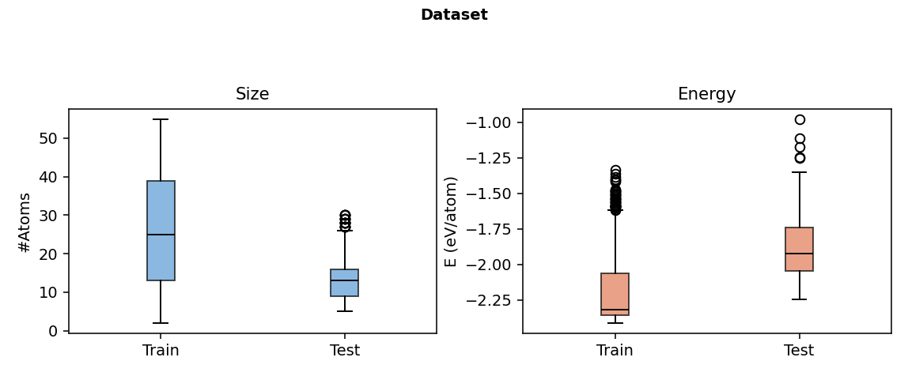
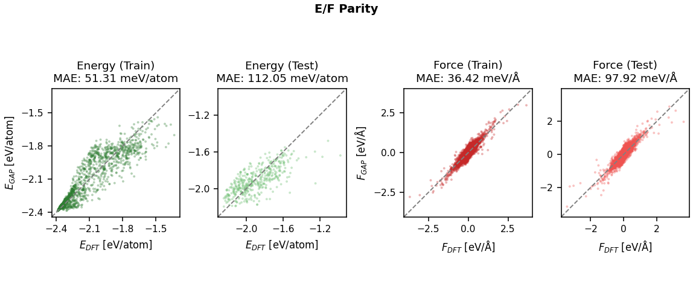
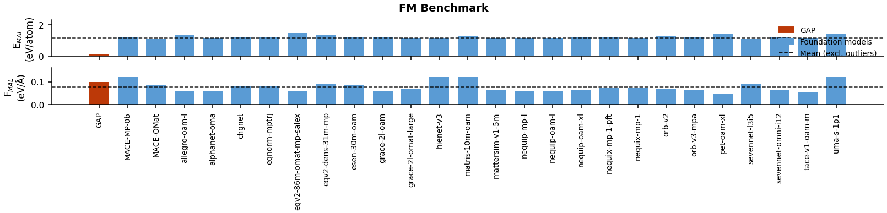
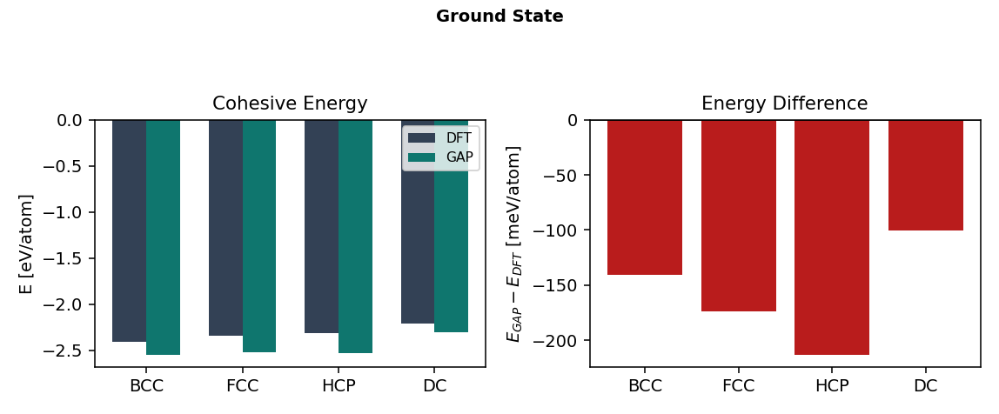
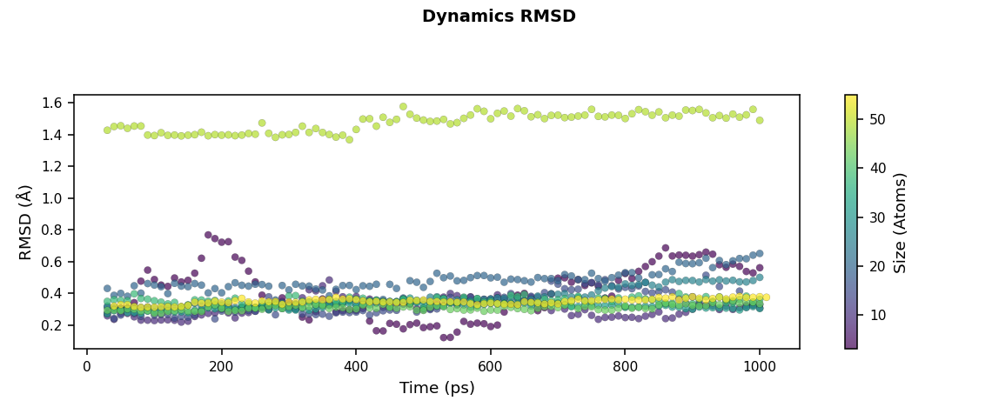
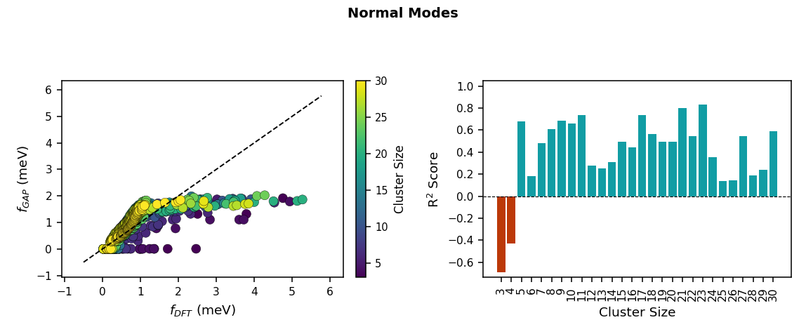

DFT vs. GAP Lattice Parameters (Bulk Polymorphs)
| Polymorph | a (Å) | b (Å) | c (Å) | α (°) | β (°) | γ (°) | ||||||
|---|---|---|---|---|---|---|---|---|---|---|---|---|
| DFT | GAP | DFT | GAP | DFT | GAP | DFT | GAP | DFT | GAP | DFT | GAP | |
| Loading… | ||||||||||||


MD Simulation Temperature (K)
| N (atoms) |
|---|
| Loading… |

